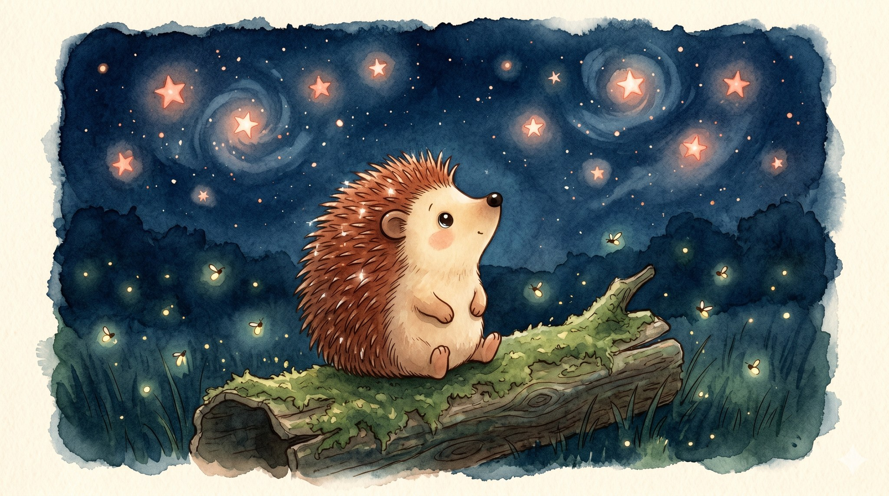
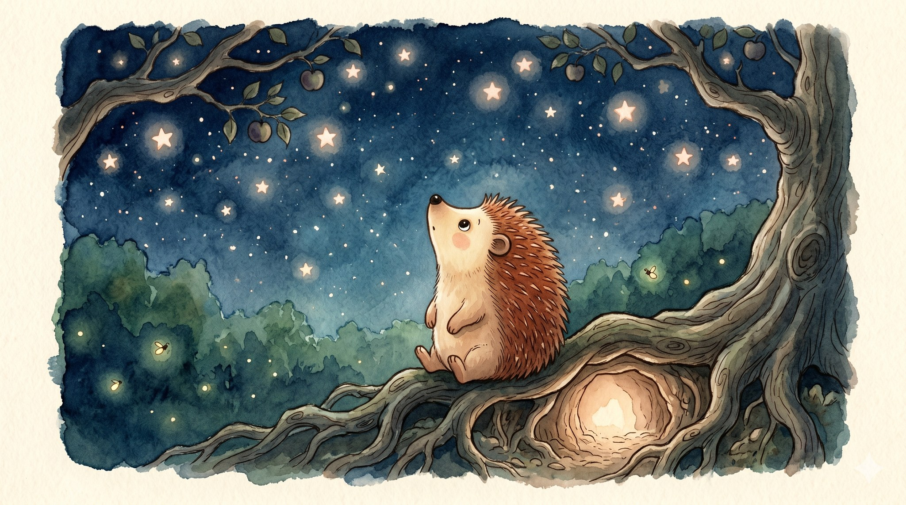
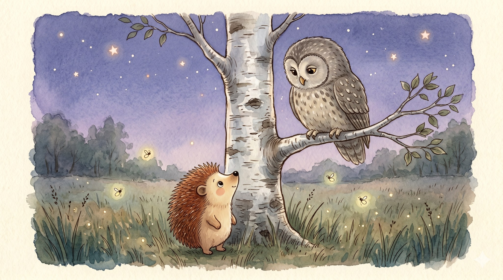
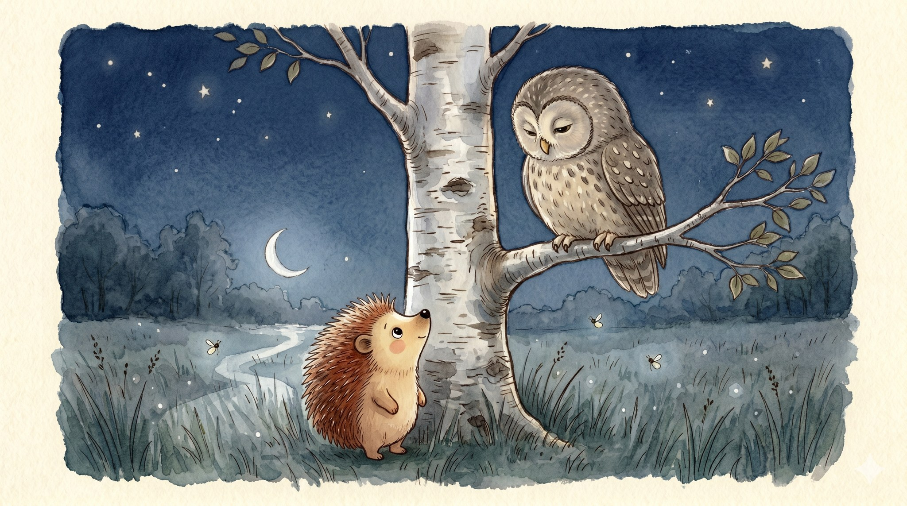
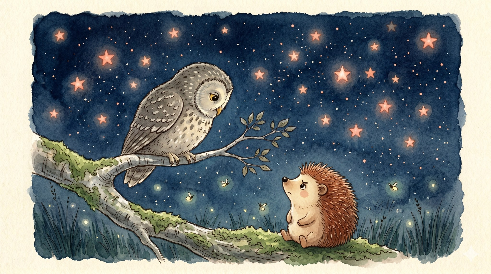
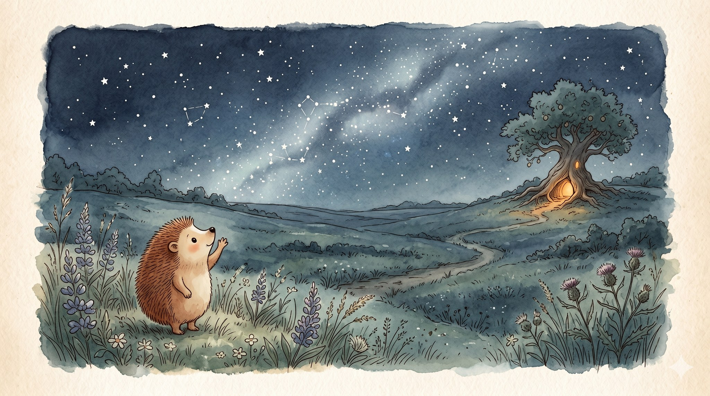

Moss and the Starry Night Sky

A story for ages 6–10 about how asking questions is its own kind of answer

Moss was a small hedgehog who lived under the roots of an old apple tree, and Moss had one great big habit: Moss looked up.
Up at the clouds. Up at the leaves. And at night — oh, at night — up at the stars. The dark sky was spilled all over with them, like a whole jar of tipped-over light.
And Moss had questions. So many questions. Tonight, Moss was going to ask them.

Moss waddled across the meadow to the old owl, who sat on the lowest branch of a birch tree, thinking owl thoughts.
"Owl," said Moss, "what are stars?"
"Stars are very far away," said the owl, turning its great round head. "Farther than you could walk in a hundred lifetimes. And very, very old. Some have been shining so long that their light is only just now arriving."

Moss sat down in the cool grass to think. A ribbon of moonlight slid across Moss's spines.
"Owl," said Moss at last, "are the stars looking back at me?"
The owl was quiet for a long, long time. Then it blinked, once, slowly.
"I do not know," said the owl. "That is an excellent question. I do not have an answer."

"Will you tell me when you find out?" asked Moss.
The owl made a soft sound, almost a laugh. "Some questions stay questions, Moss. You don't ask them to get an answer. You ask them because the asking is the good part. The asking is what makes you look up."
Moss looked up, and there were so many stars. More than Moss could count. More than leaves on the apple tree. More than words Moss knew.

Moss lifted one small paw and waved at the stars.
Just in case.
The stars did not wave back. But they kept on shining, steady and bright, the way they had for longer than anyone could remember. That was enough for tonight.
Moss waddled home to the burrow under the apple tree and dreamed, for the very first time, of a road made of stars.
And in the morning, Moss decided: there would be more questions tomorrow.